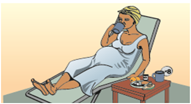
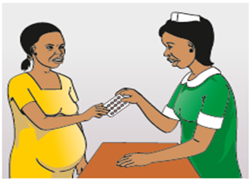

Nutrition
Use food chart in maternal health record book to educate her on good nutrition practices
Dring 6 to 8 glasses of liquids a day
Counsel client to eat foods rich in iron, folate and vitamin C:
Meat (especially liver, kidney, and other organ meats)
Beans, peas, lentils
Dark green leafy vegetables
Eggs
Fish
Fruits like oranges, pineapples, mangoes, or bananas

Counsel client to take iron and folic acid supplements
